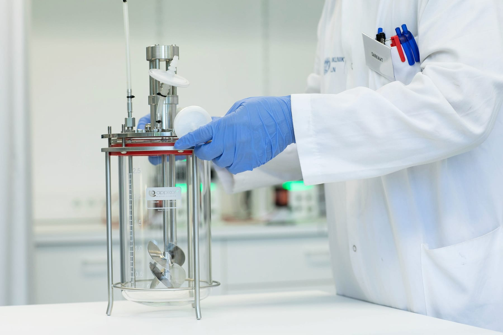
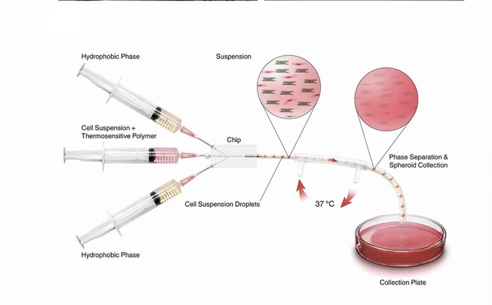
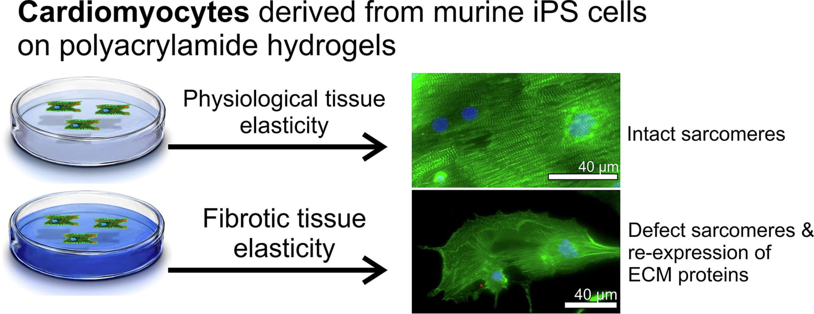
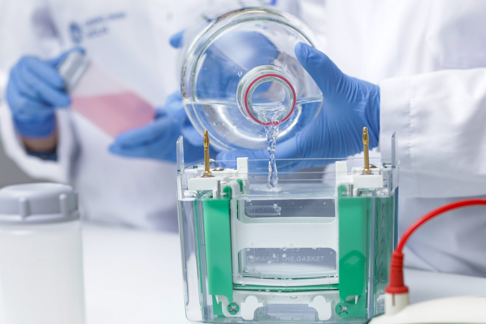

Five research programmes paired with five in-house technology platforms — from iPSC expansion and cardiac organoids to bioreactors, hydrogel scaffolds, and genetic engineering. Scroll through the work, then through the tools that make it possible.
The lab's research pipeline runs from iPSCs through differentiated cardiac cells, into organoids and engineered tissues, and out into disease modelling, drug testing, and transplantation. Each stage has its own platform.

Five research areas. One viewer. As you scroll each programme past the fold, the viewer swaps to the confocal channel that best resolves it — nuclei, sarcomere, lineage, drug response, vasculature.


Robust, reproducible production of human iPSC-derived cardiomyocytes and endothelial cells at a scale compatible with therapeutic and drug-testing applications. The manufacturing platform is the first mile of every downstream programme — it begins, as everything does, with the nuclei you can count.
Self-organising cardiac organoids and engineered microtissues built on hydrogel scaffolds. These three-dimensional systems resolve structure, contractility and the first emerging vascular networks — the sarcomere stripes in α-actinin are the first sign the tissue is behaving like a real heart.
In vitro models that reconstitute physiological and pathological cardiac conditions. We study how mechanical, biochemical and lineage cues shape tissue behaviour — and how those cues break down in disease. The RFP reporter lets us watch the cardiomyocyte fraction in real time.
Organoid-based compound validation combined with targeted editing of iPSCs and cardiac lineages. The same 3D systems that mature the tissue are used to interrogate the compounds and the alleles that shape it. All channels together, because every readout matters at once.
iPSC work in horse and camel, extending the lab's stem cell platform to large domestic species. The programme supports novel regenerative therapies for skin injury and osteoarthritis — and vascularisation, stained here by von Willebrand factor, is the limiting factor for every engineered tissue above a few hundred microns.
Each platform is developed in-house, maintained by the team, and connected to the next stage of the pipeline — bioreactor to chip, chip to gel, gel to tissue, tissue to edit.

Scalable stirred and perfused culture vessels for iPSC expansion and cardiomyocyte differentiation. The bioreactor is where the lab's cell output is generated; its stability sets the ceiling for everything downstream.

High-throughput encapsulation of cells and microtissues into hydrogel carriers using microfluidic chips. The encapsulation stage turns free-floating cells into addressable 3D units that can be handled, imaged, and transplanted.

Tunable hydrogel matrices with controllable stiffness, degradation and ligand presentation. These scaffolds give cardiac cells the mechanical and biochemical microenvironment that favours maturation into contractile tissue.
Organoid and engineered microtissue assembly systems that combine cells, hydrogel, and geometry into a single 3D specimen.

Targeted modification of iPSCs and cardiac lineages for reporter introduction, disease allele correction, and mechanistic studies in isogenic backgrounds. The gene-edit stage makes everything we build interpretable.